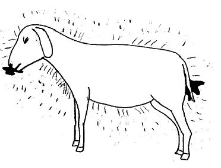
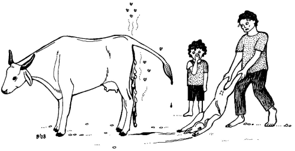
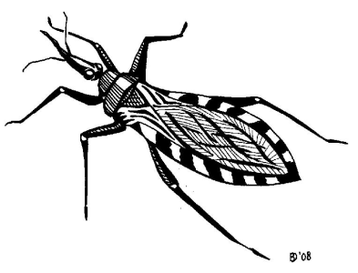
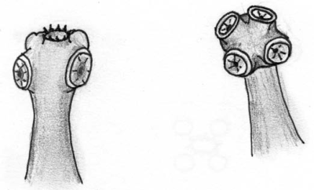
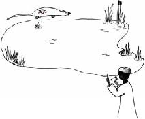

Examples of zoonoses
Examples of zoonoses
{kind=link}
Introduction
Zoonoses highlighted in this Chapter
- Anthrax
- Avian Influenza
- Bovine tuberculosis
- Brucellosis
- Cysticercosis
- Chagas' disease
- Echinococcosis
- Influenza: see avian influenza
- Leptospirosis
- Rabies
- Sleeping sickness
- Tapeworms: see Echinococcosis or Cysticercosis
- Toxoplasmosis
- Trypanosomiasis: see sleeping sickness
- Tuberculosis: see bovine tuberculosis
- Viral Hemorrhagic Fevers
- Yellow Fever
Anthrax
| Anthrax is also called carbunco or splenic fever. It used to be a global disease, but many countries have succeeded in eradicating it. The disease is prevalent in East Asia, West and Central Africa, Madagascar and Central America. And, due to breakdown of veterinary services, the incidence of anthrax is increasing again worldwide, for example in Eastern Europe.
Transmission and symptoms in humans
There are three forms affecting humans: 1.) The cutaneous form or skin form is the commonest form and is transmitted via the skin by touch from the carcass, blood, wool, bones or skin of an animal that died of anthrax. It causes vesicles in the skin that are only slightly painful and black in colour. Without treatment, one out of five infected people die. 2.) The respiratory form is caused by inhalation when working with leathers and wools in a closed atmosphere. At the onset it seems like a common respiratory infection, but days later it becomes more serious and may even cause death. 3.) The intestinal form can be contracted from eating the meat or drinking the blood of an animal affected by this disease. The symptoms of the disease are violent, expressed by vomiting and bloody diarrhoea. Some 25 to 75 % of the patients die.
|
|  |
| Animal that died from anthrax with black blood from nose, mouth, vulva and anus |
| (c) Agromisa Foundation and CTA, Wageningen, 2008
|
Symptoms in animals
Prevention
- Any animal that dies suddenly is suspicious of being infected with anthrax: do not do an autopsy on an animal that has died suspiciously or has blood oozing out of its natural openings (it can be dangerous)!!
- Avoid letting wild dogs and animals open the carcass;
- Destroy the carcass as rapidly as possible (by burning or to burying with caustic lime).
- Do not eat meat or blood from an animal that died of an unknown disease.
- Be aware of small skin injuries and take care of personal hygiene.
- Ventilate and use proper working clothes in places where products of animal origin are handled, especially leathers and wool.
- Groups of people, who by their work are at serious risk, can be vaccinated.
- Vaccinate cattle and goats annually in regions where anthrax is common.
Avian Influenza
Avian or bird influenza is a disease that mainly affects poultry. Wild birds can also be infected but normally have no symptoms. Avian influenza can also affect humans, pigs, horses and many other animals. Although all influenzas are related, the type of influenza that infects one animal species usually does not affect another animal species. However, there are exceptions.
| When humans get infected with avian influenza the symptoms are red eyes and those accompanying a (common) flu-like illness, which is mostly very mild. In chickens, one of the alarming symptoms is the sudden death of many chickens in a short space of time. But the disease may also occur without causing symptoms, or with only fatigue, diarrhoea and respiratory problems. A certain type of influenza, called H5:N1, is the cause of the current avian influenza-epidemic. This type can also cause severe pneumonia in humans, which luckily seldom happens. However, there is a very real chance that people who get the disease will die.
|
| Chicken with symptoms of avian flu. The chicken has diarrhoea and runny eyes. |
| (c) Agromisa Foundation and CTA, Wageningen, 2008
|
Transmission: how do people get this disease?
Prevention
Vaccination against avian influenza in poultry is possible. Ask a veterinarian about this.
Challenges
Bovine tuberculosis
Symptoms in humans
Transmission: how do people get this disease?
Symptoms in animals
Prevention
- Boil all milk before consumption.
- Vaccinate newborn children with tuberculin vaccine.
- Meat inspection and inspection of carcasses: cows with tuberculosis have tubercles (small bumps) in their lungs, intestines and other body parts.
- People with a chronic cough should be referred to a medical centre for tuberculin testing, X-rays and, if necessary, proper treatment.
- Test cattle with the tuberculin test and if the test says that the animals are infected with tuberculosis, kill these animals. In some countries there is a certificate-system where tuberculosis-free herds get a certificate. It is then necessary to prevent people with tuberculosis from working with cows, because through them the cattle can become sensitized to the tuberculin test.
Brucellosis
Brucellosis, a disease that has spread worldwide, has different names: infectious abortion and Bang disease in animals; and undulant fever or Malta fever in humans.
Brucellosis in humansPeople get brucellosis through direct contact with ill animals and by touching aborted foetuses, placentas, secretions, birth channels and excrements. Brucellosis can also be contracted from drinking uncooked milk or eating cheese made from raw milk. |
|  |
| Cow showing a stillborn foetus and placenta. |
| (c) Agromisa Foundation and CTA, Wageningen, 2008
|
Some persons infected with the Brucella bacteria do not have any symptoms at all. Sometimes you will see acute fever, chills, insomnia, sexual impotence, generalized constipation, pains and sometimes nervousness and depression. These symptoms are easily confused with the symptoms of malaria, and therefore people may not think that raw milk has made them ill. In humans brucellosis can also cause abortion!
Brucellosis in animals
Animals can become infected when they lick or eat the foetus, placenta or liquids from an animal that has aborted, and from eating the hay where a dead foetus had lain. A female animal can also get brucellosis when she mates with a male animal that is infected. Brucellosis can be even be transmitted via artificial insemination.
The main symptom in all animals is abortion, often combined with retention of the placenta, a lower milk production, mastitis and infertility:
- In cattle, abortion occurs from the 5th month of gestation.
- In goats and ewes the main symptom is abortion in the 3rd or 4th month.
- In pigs, abortions occur in the second half of gestation. Besides abortion, brucellosis may also cause abscesses in pigs.
- In horses and dogs, abortion is rare. Cats are resistant to brucellosis.
Prevention
- Boil milk before drinking it. Some people say that acidity also kills the brucellosis bacterium, but this is not certain.
- Veterinarians, cattle dealers and slaughterhouse workers should use protective clothing (mainly gloves) and have regular medical checkups. Vaccines exist for people who are at high risk.
- In case of an abortion: separate the animal, bury the foetus and placenta and burn the grass/straw where the animal has aborted.
- Vaccination of young female animals is recommended if there is much brucellosis around. Contact your veterinary services for vaccination. There is no vaccine for pigs.
- In countries where brucellosis is not common, control of the disease is done by testing cattle and eliminating cattle with positive test results.
Chagas' disease
| Chagas' disease, or American Trypanosomiasis is only seen in the Americas. The symptoms it causes are slightly different to those of African sleeping sickness and it is easier to cure. Prevention of American and African trypanosomiasis is the same. Chagas' disease is transmitted to humans by an insect (beetle-like) that is 2 centimetres in length called Triatomineo, better known as "vinchuca". |
|  |
| The vinchuca |
| (c) Agromisa Foundation and CTA, Wageningen, 2008
|
Tapeworms and Cysticercosis
| Tapeworms live in intestines of humans and animals and can measure up to 10 metres! Tapeworms are made up of a lot of small segments, called proglottids. These segments become detached and are excreted with the faeces. They look like rice grains. Each segment contains more than 10,000 eggs. If humans or animals ingest those eggs, the eggs hatch and the young worms migrate through the body (especially the muscles) of the animal or human. They form cysts in muscles and organs. If you have tapeworms in your intestines, it is called taeniasis; if you have cysts, then it is called cysticercosis. |
|  |
| Left: the head of Taenia solium , the pig tapeworm, under a microscope. |
| Right: the head of Taenia saginata, the bovine tapeworm, under a microscope. Both heads are enlarged approximately 100 times. (c) Agromisa Foundation and CTA, Wageningen, 2008
|
The three types of tapeworms of significance to humans are:
Symptoms in cattle and pigs
Transmission: how do people get this disease?
- Once in the human intestines, the adult tapeworm lays eggs there.
- The eggs are expelled with the faeces and are eaten by cattle or pigs.
- The eggs hatch in the cow or pig.
- The larvae (from the eggs) grow and form cysts (vesicles or round holes) in the muscles.
- When humans eat raw or badly cooked meat (= muscles), the larvae wake up and grow into adult worms again.
Symptoms in humans caused by the tapeworms
Symptoms in humans caused by cysticercosis
Prevention
- Educate people about cysticercosis and the lifecycle of the tapeworm. People must be made aware of the fact that if they defecate in a place where pigs can come, they contribute to the infection of other people.
- Promote the use of latrines.
- Wash hands after defecating and before cooking or eating. This aspect is especially important for children.
- When there are white pieces like grains of rice in the faeces, an antiparasiticum must be administered to all members of the family.
- Cook pig meat very well.
- Inspection of pig meat. The traditional control in markets and fairs is insufficient; more and better control is needed.
- Keep pigs in a stable.
Taenia solium ,Taenia saginata
- Lifecycle in humans and pigs
- Forms cysts in pigs and humans
- Proglottids are not active: they are passively excreted with the faeces
- Pig cysticercosis is dangerous!
Taenia saginata
- Lifecycle in humans and cattle
- Forms cysts in cattle
- Proglottids are active: they creep out of the anus, also without faeces
- Cattle tapeworms are annoying, but not dangerous
Echinococcosis
How do people get the disease
Symptoms in humans
Prevention
- Routine deworming of domestic dogs and cats
- Not giving the remains of sheep and cattle to domestic animals
- Not allowing animals in the slaughterhouse other than those for slaughter
- Preventing domestic animals from wandering and straying
- Handling wild carnivores with care and always washing hands after handling
- Carefully washing or cooking before eating all wild fruits or vegetables picked directly from the ground.
Leptospirosis
| Leptospirosis is a zoonosis that lurks in water, soil and foods contaminated by urine of infected animals, especially cattle, rats and pigs. Other names for leptospirosis are: fever of the rice fields, fever of the cane plantations, enfermedad de los porqueros (Spanish) and Weil's disease. The disease can become especially problematic after heavy floods. In the past, this was what happened in parts of Ecuador, Cuba and Nicaragua where many cases of leptospirosis occurred after floods.
Symptoms in animalsThe disease mainly affects cattle, dogs, rats and mice, and has a wide range of symptoms, though in some cases no symptoms at all. In cows it can cause mastitis, abortion, infertility and bloody urine. Dogs can become seriously ill with fever and infected kidneys. |
|  |
| People drinking water from a source that may contain leptospira from the urine of rats run the risk of getting seriously ill |
| (c) Agromisa Foundation and CTA, Wageningen, 2008
|
Symptoms in humans
The symptoms vary much and can even be absent. In general two clinical types are distinguishable:
Prevention
- Avoid contact with the urine of animals.
- Pay attention to personal hygiene and use a separate set of clothes when working with animals.
- The leptospira bacteria that cause leptospirosis will die in the sun, so you can hang out your working clothes in the sun for a day.
- Drain low land as best as possible.
- Control rats and mice.
- Avoid swimming, bathing or washing in fresh water that might be contaminated by the urine of animals.
- Appropriate vaccination for pigs, cattle and dogs.
Rabies
Transmission: how do animals and people get infected?
Symptoms in humans and animals
Prevention
- Do not touch any animal with nervous symptoms and changes of character, and do not pick up a fallen vampire bat.
- After a bite:
1.) Catch and lock up the dog.
2.) Wash the person's wound with abundant water and soap!
3.) Go to a health centre to start anti-rabies vaccine treatment. If the dog responsible for the bite remains healthy for the duration of 5 days after the bite, the treatment can be stopped.
Sleeping sickness
How do people get Sleeping sickness?
Symptoms in humans
Prevention
- Wear thick protective clothing. Tsetse can be quite aggressive and bite through thin fabrics.
- Wear khaki or olive coloured clothing, because tsetse is attracted to bright and very dark colours.
- Use mosquito nets.
- Avoid places where the tsetse lives (vegetation along watercourses extending to vast areas of wooded savannah).
- Try to improve the construction of the houses: preferably plaster walls and ceilings and do not use hollow canes to build a house.
- Repellents do not work on tsetse flies. Medicines that work are hard to come by.
Toxoplasmosis
Transmission: how do people get this disease?
Symptoms in humans
Symptoms in animals
Prevention
- Protect food against flies, cockroaches and mice.
- Wash your hands after handling raw meat and avoid eating raw or insufficiently cooked meat. This is especially important for pregnant women.
- Wash hands after touching soil where cats might have defecated.
Viral Hemorrhagic Fevers
How do people get these diseases?
Symptoms in humans
Prevention
Yellow Fever
How do people get yellow fever?
Symptoms in humans and animals (monkeys)
Prevention
Information Source Links
- Zoonoses - Diseases transmitted from animals to humans. Agromisia. (2008). Agrodok-Series No.46. ISBN Agromisa: 978-90-8573-105-4
Last updated:
| Unless otherwise stated, all content on the Infonet Biovision Website is licensed under a Creative Commons License | Disclaimer |